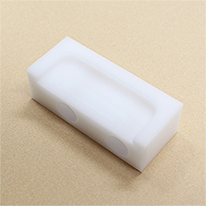
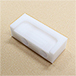
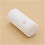
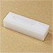
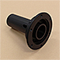

   
|
|
| 特徴 |
バランスの取れた機械的性質を持つ結晶性樹脂で、特に耐疲労性に極めて優れる。また、耐摩耗性、耐薬品性、耐疲労性、耐クリープ性、寸法特性にも優れる。
ただし、分子中に酸素を多く含むため難燃性の付与は至難であり耐候性は良くない。 |
 |
| 用途 |
家電や電気電子製品の各種外装・筐体・機構部品類、自動車パネルなど内装部品、事用家具部材、ブラシの柄など様々な用途で使用される。 |
|
| 接着 |
接着剤による接着が非常に困難な材料。 |
|
|
|